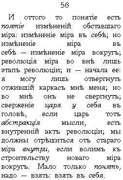
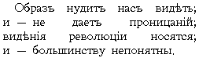
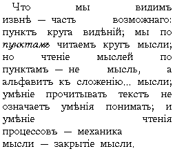
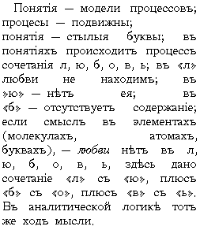

Glossolalia (Section 56)
GLOSSOLALIA

And therefore this concept is a perception of amendations of the surrounding world: the amendation of the world in itself is -- the amendation of the world around; the revolution of the world on the outside is just a phase of the revolution; and -- its beginnings: I can just throw off what is for me the outlived carcas of me; but inside of me it can not be thrown away; the overthrow of the tsar takes place in one's own head, if that tsar is an abstraction of thought, it is an internal act of revolution; we must renounce the old world inside, if we will the construction of a new world around us. It is too little to only comprehend, you have to -- grasp it: grasp it into yourself.

An image compels us to view it; and -- it does not give penetrations; visions of the revolution are carried about; and -- to the majority they are incomprehensible.

What we view from the outside is -- a part of the possible: a point of the circle of visions; we read the circle of thought point by point; but the reading of thoughts point by point is -- not thought, but an alphabet for the composition of . . . thought; the mental ability to read a text does not signify the mental ability to comprehend; and the mental ability to read processes -- the mechanics of thought -- is the closing off of thought.

Concepts are -- models of processes; processes are -- in motion; processes are -- cooled off letters; in the concepts there occurs a process of combination l, o, v, e; we do not find love in the "l"; it is not -- in the "o"; in the "v" -- the content is missing; if the meaning is in the elements (in the molecules, atoms, letters), -- love is not in l, o, v, e, here we are given a combination of "l" with "o," plus "v" with "e".
In analytical logic there is this same train of thought.